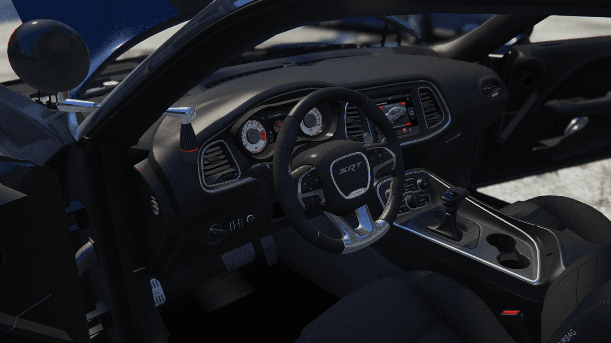
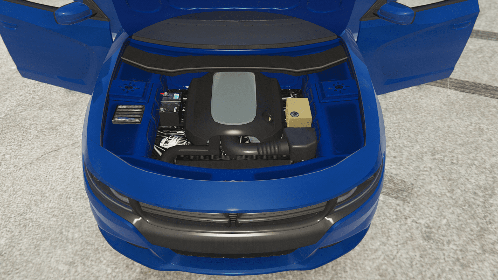
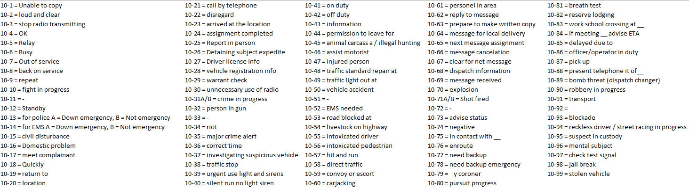

"The mission of the Los Santos Police Department is to protect and serve the community. You
are the fine line that separates the lawful from the lawless. But above all, your mission is to
protect the community through any means necessary, whether it be through community
outreach programs, cadeting, traffic enforcement, general patrol, or, at a last resort, the use of
force."
Miranda Rights
“You have the right to remain silent, anything you do say can and will be used against you in a court of law. you have the right to an attorney,
if you can not afford an attorney one will be appointed to you by the state.”
PART 1 - FITUR
PART 2 - UNIFORM
PART 3 - WEAPON
PART 4 - VEHICLE
POLAS 350
POLAS 350, Helikopter ini dirancang untuk operasi kepolisian udara, dilengkapi dengan lampu darurat, sirene,
dan peralatan lainnya yang memungkinkannya untuk melakukan patroli udara dan tindakan pengejaran dengan efisien.
Dengan daya tahan yang tinggi dan kemampuan manuver yang baik, Polas 350 adalah alat yang andal dalam menjaga keamanan dan ketertiban di lingkungan kota Los Santos.
Spesifikasi:
- Kelas: Kendaraan Udara
- Tipe: Helikopter Kepolisian
- Peralatan Kepolisian: Lampu darurat, sirene, dan peralatan pengejaran
- Daya Tahan: Tinggi
- Kapasitas Penumpang: Hingga 4 orang
- Kemampuan Manuver: Baik
- Penggunaan: Patroli udara dan pengejaran
FORD CROWN VICTORIA
Ford Crown Victoria adalah mobil sedan yang legendaris yang telah lama digunakan oleh berbagai lembaga keamanan dan penegak hukum di Amerika Serikat.
Mobil ini terkenal karena keandalannya, kenyamanan, dan kinerja yang kokoh.
Selain digunakan oleh kepolisian, Crown Victoria juga populer sebagai taksi dan kendaraan pribadi. Desainnya yang klasik dengan profil yang besar membuatnya mudah dikenali di jalan.
Spesifikasi:
- Kelas: Kendaraan Darat
- Mesin: Sekitar 250 hingga 260 tenaga kuda
- Torsi: Sekitar 287 lb-ft
- Transmisi: Otomatis 4-kecepatan
- Sistem Penggerak: Roda belakang (RWD)
- Kapasitas Penumpang: Hingga lima orang
- Penggunaan Utama: Kendaraan patroli kepolisian, kendaraan taksi, dan penggunaan pribadi.
- Ukuran Ban: Ban ukuran penuh (biasanya 17 inci)
- Fitur Keamanan: Airbag ganda depan, riflerack, sistem pengereman anti-lock (ABS), dan pengukur tekanan ban.
MACK MOTOR
Mack Motor, kendaraan ini dirancang untuk melalui medan sempit dan pengejaran yang melibatkan suspect kendaraan motor atau pengejaran yang terjadi dipegunungan yang
sulit dijangkau kendaraan mobil atau roda 4 lainnya
Spesifikasi:
- Kelas: Kendaraan Darat
- Tipe: Kendaraan Motor Polisi
- Peralatan Kepolisian: Lampu darurat, sirene, dan peralatan pengejaran
- Daya Tahan: Medium
- Kapasitas Penumpang: Hingga 2 orang
- Kemampuan Manuver: Baik
- Penggunaan: Patroli darat dan pengejaran
BEARCAT RIOT
BearCat Riot adalah kendaraan taktis yang dirancang khusus untuk digunakan dalam situasi kerusuhan dan penegakan hukum yang berpotensi berbahaya.
Kendaraan ini merupakan bagian dari keluarga BearCat yang dikenal dengan perlindungan dan ketahanan tingkat tinggi. BearCat Riot dilengkapi dengan fitur-fitur khusus yang memungkinkannya untuk menghadapi kerusuhan dan konteks operasional yang berisiko tinggi.
Dengan desain yang tangguh dan perlengkapan khusus, kendaraan ini cocok untuk penugasan kepolisian yang memerlukan perlindungan ekstra dan kekuatan.
Spesifikasi:
- Dimensi: Panjang, Lebar, dan Tinggi sesuai varian, biasanya sekitar 6 hingga 7m panjang, 2,5 hingga 3m lebar, dan 2,5 hingga 3m tinggi.
- Perlindungan: Dibangun dengan material yang tahan terhadap peluru, dan bahaya eksternal lainnya. Kaca tebal anti-peluru.
- Daya Mesin: Biasanya dilengkapi dengan mesin bertenaga tinggi yang memungkinkan kendaraan ini untuk beroperasi dengan baik.
- Sistem Roda dan Suspensi: Dilengkapi dengan sistem yang kuat dan suspensi yang dirancang untuk mengatasi medan yang kasar.
- Kapasitas Penumpang: Biasanya dirancang untuk mengangkut sejumlah besar personel, seringkali hingga 10 orang atau lebih.
- Perlengkapan Khusus: Dilengkapi dengan fitur-fitur khusus seperti peralatan pemadaman kebakaran, dan sistem komunikasi taktis.
- Kegunaan: Digunakan dalam penanganan kerusuhan, operasi penegakan hukum taktis, dan situasi berisiko tinggi lainnya.
- Lokasi Penggunaan: Umumnya digunakan oleh unit-unit taktis dan pasukan penegak hukum khusus.
Dodge Challenger

Dodge Challenger SRT Police adalah varian khusus dari kendaraan patroli yang dibangun berdasarkan mobil Dodge Challenger SRT,
yang dikenal sebagai mobil muscle yang kuat dan cepat. Kendaraan ini dimodifikasi dan dilengkapi dengan perlengkapan khusus untuk digunakan oleh departemen kepolisian.
Dengan desain yang mengesankan dan performa yang tinggi,
Dodge Challenger SRT Police adalah alat yang efektif dalam penegakan hukum, memungkinkan pengejaran cepat dan respon taktis.
Spesifikasi:
- Kelas: Kendaraan Darat (Interceptor Unit) / Certified User
- Mesin: Mesin V8 bertenaga tinggi dengan kapasitas sekitar 6,4 liter atau lebih besar.
- Tenaga: Dapat menghasilkan lebih dari 400 hingga 700 tenaga kuda tergantung pada varian dan modifikasi.
- Transmisi: Otomatis dengan 8 hingga 10 kecepatan.
- Sistem Penggerak: Roda belakang atau penggerak empat roda (tergantung pada konfigurasi).
- Perlengkapan Khusus: Dibekali dengan lampu darurat dan sirene polisi, peralatan komunikasi, sistem pemadam api di dalam kendaraan, dan peralatan keamanan tambahan.
- Kapasitas Penumpang: Biasanya kursi untuk dua hingga empat orang, termasuk sopir.
- Warna Umum: Biasanya dicat dalam skema warna khusus departemen kepolisian dengan aksen dan striping yang mencolok.
Dodge Charger

Dodge Charger Police adalah varian taktis dari mobil Dodge Charger yang dirancang khusus untuk digunakan oleh departemen kepolisian.
Kendaraan ini memiliki desain yang tangguh dan performa yang kuat, memungkinkan penegakan hukum untuk menghadapi tugas-tugas pengejaran, patroli,
dan respon cepat dengan efisiensi dan kehandalan tinggi.
Dodge Charger Police telah menjadi kendaraan patroli yang populer di banyak departemen kepolisian di seluruh Amerika Serikat dan negara-negara lain.
Spesifikasi:
- Mesin: Mesin V8 berkapasitas besar, biasanya antara 5,7 hingga 6,4 liter, yang menghasilkan tenaga tinggi.
- Tenaga: Bisa menghasilkan lebih dari 370 hingga 485 tenaga kuda tergantung pada varian dan modifikasi.
- Transmisi: Otomatis dengan 8 atau 10 kecepatan, yang memungkinkan perpindahan gigi yang lancar dan respons cepat.
- Sistem Penggerak: Roda belakang atau penggerak empat roda (tergantung pada konfigurasi dan kebutuhan departemen).
- Perlengkapan Khusus: Dilengkapi dengan lampu darurat, sirene, peralatan komunikasi polisi, sistem pemadam api di dalam kendaraan, serta peralatan keamanan tambahan seperti pelat baja anti-peluru.
- Kapasitas Penumpang: Biasanya kursi untuk dua hingga empat orang, termasuk sopir.
- Warna Umum: Biasanya dicat dalam skema warna khusus departemen kepolisian dengan aksen dan striping yang mencolok.
Ford Mustang


Ford Mustang Police adalah varian taktis dari mobil Ford Mustang yang dirancang khusus untuk digunakan oleh departemen kepolisian.
Mobil ini menyatukan gaya khas Mustang dengan kinerja tinggi dan fitur keamanan serta penegakan hukum yang diperlukan. Dengan desain yang sporty dan performa yang kuat,
Ford Mustang Police adalah kendaraan patroli yang efisien dan andal, cocok untuk tugas pengejaran, patroli cepat, dan respons taktis.
Spesifikasi:
- Kelas: Kendaraan Darat (Interceptor Unit) / Certified User
- Mesin: Mesin V8 bertenaga tinggi dengan kapasitas sekitar 5,0 liter atau lebih besar.
- Tenaga: Bisa menghasilkan lebih dari 400 hingga 450 tenaga kuda tergantung pada varian dan modifikasi.
- Transmisi: Otomatis dengan 10 kecepatan atau lebih, yang memungkinkan perpindahan gigi yang lancar dan respons cepat.
- Sistem Penggerak: Roda belakang atau penggerak empat roda (tergantung pada konfigurasi dan kebutuhan departemen).
- Perlengkapan Khusus: Dilengkapi dengan lampu darurat, sirene, peralatan komunikasi polisi, sistem pemadam api di dalam kendaraan, serta peralatan keamanan tambahan seperti pelat baja anti-peluru.
- Kapasitas Penumpang: Biasanya kursi untuk dua hingga empat orang, termasuk sopir.
- Warna Umum: Biasanya dicat dalam skema warna khusus departemen kepolisian dengan aksen dan striping yang mencolok.
Corvette C7
Corvette C7 Police adalah varian khusus dari mobil sport Chevrolet Corvette C7 yang telah dimodifikasi dan dirancang untuk digunakan oleh departemen kepolisian.
Kendaraan ini memadukan keindahan desain Corvette dengan kinerja tinggi, menciptakan kendaraan penegakan hukum yang cepat dan kuat. Dengan tampilan yang mencolok dan performa yang mengesankan,
Corvette C7 Police menjadi pilihan ideal untuk tugas-tugas pengejaran dan patroli taktis.
Spesifikasi:
- Kelas: Kendaraan Darat (Interceptor Unit) / Certified User
- Mesin: Mesin V8 bertenaga tinggi dengan kapasitas sekitar 6,2 liter atau lebih besar.
- Tenaga: Bisa menghasilkan lebih dari 450 hingga 650 tenaga kuda tergantung pada varian dan modifikasi.
- Transmisi: Biasanya otomatis dengan 8 hingga 10 kecepatan, yang memungkinkan perpindahan gigi yang lancar dan respons cepat.
- Sistem Penggerak: Roda belakang.
- Perlengkapan Khusus: Dilengkapi dengan lampu darurat, sirene, peralatan komunikasi polisi, sistem pemadam api di dalam kendaraan, serta peralatan keamanan tambahan seperti pelat baja anti-peluru.
- Kecepatan Maksimum: Bisa mencapai kecepatan tinggi, biasanya di atas 150 hingga 180 mph (sekitar 240 hingga 290 km/jam).
- Kapasitas Penumpang: Biasanya kursi untuk dua orang, termasuk sopir.
- Warna Umum: Biasanya dicat dalam skema warna khusus departemen kepolisian dengan aksen dan striping yang mencolok.
PART 5 - RANK
PART 6 - 10 CODES/RADIO CALLOUTS

Commonly Used Code
This is (Your Badge) reporting 10-41
- Digunakan ketika ingin On Duty
This is (Your Badge) reporting 10-42
- Digunakan ketika ingin Off Duty
This is (Your Callsign) responding to the last 10-90/10-31
- Digunakan ketika ingin merespon situasi perampokan Bank/LTD
This is (Your Callsign) doing 10-37/10-38 on (Arah mata angin) (nama jalan) with (deskripsi kendaraan) (berapa orang terlihat) (status situasi)
This is 7-L-20 doing 10-38 on South Bound Alta Street with grey in color sedan 2 door
3 occupant inside the vehicle this situation is code 4 standby for future update/this situation need assistance/77
- Digunakan ketika ingin melakukan traffic stop
This is (Your Callsign) doing active pursuit(10-80) with (Deskripsi kendaraan) (dari situasi apa) (arah mata angin) (nama jalan)
This is 7-L-20 doing active pursuit(10-80)with grey in color sedan 2 door from last 10-90 Vespucci Blvd heading north bound strawberry ave
- Digunakan ketika melakukan update situasi entah itu perampokan atau situasi lainnya
This is (Your Callsign) from last situation (situasi apa) with (deskripsi kendaraan) is code (status)
This is 7-L-20 from last situation 10-90 at Vespucci Blvd with grey in color sedan 2 door is code 4(status aman) we got 2 95/sedan 2 door is VCB last seen (last loc)
- Digunakan ketika melaporkan situasi terkini terhadap situasi yang di respon
PART 7 - PROCEDURE
7.1 Traffic Stop - Felony Stop
Pastikan Anda telah meminta pengemudi untuk berhenti di tepi jalan dan menginstruksikan mereka untuk mematikan mesin kendaraan mereka.
Jangan izinkan tersangka keluar dari kendaraan; mereka harus tetap di dalamnya sampai Anda melakukan interaksi.
Pastikan posisi kendaraan Anda berada di belakang kendaraan seperti yang diperlihatkan dalam gambar di bawah ini.
Setelah kendaraan berhenti di tepi jalan, Anda perlu mengumpulkan informasi seperti jumlah orang di dalam kendaraan dan nomor plat kendaraan.
Setelah Anda berhasil mengumpulkan semua data tersebut, Anda WAJIB melakukan laporan melalui radio agar petugas lainnya dapat mengetahui situasi yang Anda hadapi saat ini.
Anda dapat gunakan code di bagian Code Callouts
Selanjutnya, Anda harus memverifikasi apakah kendaraan dengan nomor plat tersebut dan pemiliknya telah dilaporkan terlibat dalam tindak kriminal dan masuk dalam daftar Warrant atau tidak.
Jika pengemudi terdaftar sebagai Warrant, langkah selanjutnya adalah melakukan tindakan "Felony Stop". Anda bisa mengeceknya di MDT atau melaporkan kepada control/dispatch.
Setelah Anda memastikan bahwa pengemudi atau kendaraan tersebut tidak terdaftar dalam daftar WARRANT dan Anda tidak berada dalam ancaman langsung,
Anda dapat maju mendekati pengemudi dan menghampiri mereka. Pastikan posisi tubuh Anda sesuai dengan aturan yang ditunjukkan dalam gambar di bawah ini.
Penempatan posisi tubuh seperti itu dilakukan untuk mengurangi potensi ancaman yang mungkin dilakukan oleh pengemudi, seperti penodongan atau penembakan langsung terhadap Anda.
Dengan posisi tersebut, jika Anda dihadapkan pada situasi yang mengancam, Anda dapat dengan cepat melindungi diri dengan berlindung di belakang mobil Anda. Setelah situasi aman,
Anda dapat melanjutkan prosedur penilangan, yang dikenal sebagai "ticketing".
Dalam langkah ini, Anda harus menjelaskan alasan penghentian kendaraan kepada pengemudi. Setelah itu, Anda dapat mencatat pelanggaran pengemudi dalam catatan tilang online dan memberikan surat tilang tersebut kepada pengemudi. Terakhir, Anda juga perlu menjelaskan kepada pengemudi bagaimana cara membayar denda tilang yang diterimanya.
7.2 Pursuit
Berikut adalah beberapa hal yang perlu kamu lakukan saat anda terlibat dalam situasi pursuit.
Selalu perbarui lokasi tersangka, jangan membuat orang lain meminta anda memperbarui lokasi. Jika anda sebagai primary dan kesulitan update dan anda memiliki
unit secondary/unit dibelakang persis primary anda bisa meminta update pursuit kepada unit tersebut.
Tetaplah berada dalam 1 baris selama pengejaran. Jangan mengambil alih pengejaran
yang sedang berlangsung tanpa izin dari unit utama. Anda dapat melakukannya jika
unit utama bertabrakan. Posisi kendaraan anda harus mengikuti aturan seperti yang
ditunjukkan oleh gambar dibawah ini.
Jika anda menabrak sesuatu, tetap di tempat anda berada dan jangan bergerak, beritahu unit lain
bahwa anda menabrak. Anda harus membiarkan semua unit melewati anda baru nantinya anda
dapat kembali ke barisan pengejaran. Jangan pernah kembali ke dalam barisan pengejaran anda
sebelumnya, tetaplah berada di ujung barisan pengejaran
7.3 PIT Maneuvers (Pursuit Intervention Technique Maneuver)
Sebelum dilakukan PIT Maneuvers anda harus memberitahu anggota lain yang merespon situasi tersbut bahwa anda ingin melakukan PIT Maneuvers
7.4 Processing Suspect
PART 8 - CHAIN OF COMMAND
PART 9 - CALLSIGN UNITS
Los Santos Sheriff Department Callsign
San Andreas State Police Callsign
Los Santos Police Department Callsign
Adam = untuk lebih 1 orang di kendaraan ketika patrol
Lincoln = untuk sendiri ketika patrol